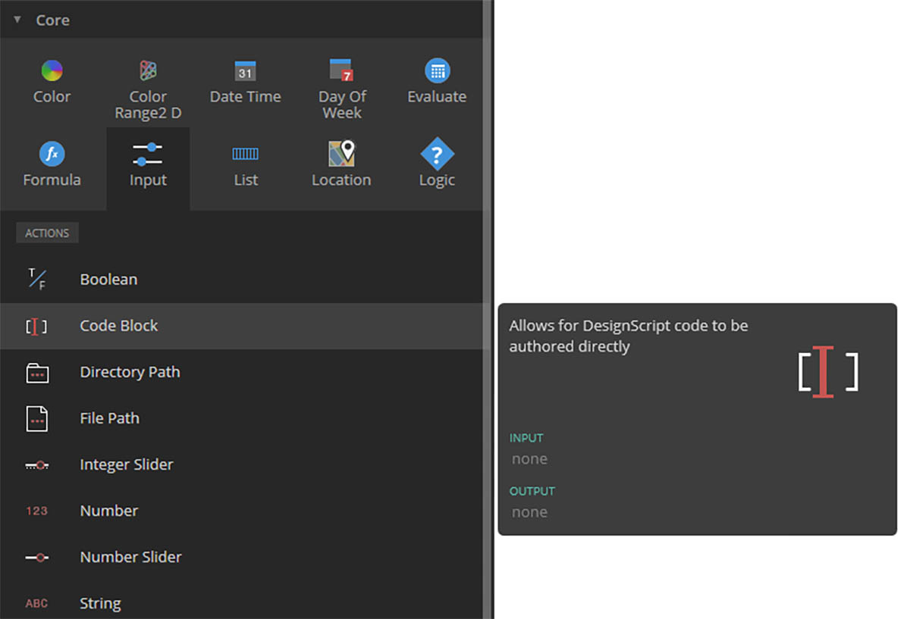

什麼是程式碼區塊？
程式碼區塊是 DesignScript 中的深層視窗，是 Dynamo 程式設計語言的核心。DesignScript 可用於從頭開始進行建置以支援探索式設計工作流程，它是一個可讀且簡要的語言，可為較小的位元碼提供即時意見以也可以用於大型且複雜的互動。DesignScript 還形成在後台驅動 Dynamo 大多數方面之引擎的基礎。因為幾乎 Dynamo 節點的所有功能和互動都與 Scripting 語言有一對一的關係，所以有唯一的機會以流暢方式在節點式互動與 Scripting 之間移動。 對於初學者，節點可以自動轉換為文字語法，以協助學習 DesignScript 或單純只是為了減少較大圖形部分的大小。 這使用稱為「節點至代碼」的流程來完成， 在 DesignScript 語法部分會顯示此流程的更多詳細資訊。 經驗更豐富的使用者可以使用程式碼區塊來建立既有功能的自訂交互式 Web 應用程式以及利用許多標準編碼範例建立使用者確定的關係。對於初學者和進階使用者之間的使用者，提供了大量的捷徑和程式碼片段可加快您的設計。雖然術語「程式碼區塊」可能會讓非程式設計師覺得有點難以理解，但它其實很容易使用，而且功能強大。初學者可以在進行最少編碼的情況下使用程式碼區塊，進階使用者可定義可在 Dynamo 定義的其他位置進行呼叫的 Script 定義。
對於初學者，節點可以自動轉換為文字語法，以協助學習 DesignScript 或單純只是為了減少較大圖形部分的大小。 這使用稱為「節點至代碼」的流程來完成， 在 DesignScript 語法部分會顯示此流程的更多詳細資訊。 經驗更豐富的使用者可以使用程式碼區塊來建立既有功能的自訂交互式 Web 應用程式以及利用許多標準編碼範例建立使用者確定的關係。對於初學者和進階使用者之間的使用者，提供了大量的捷徑和程式碼片段可加快您的設計。雖然術語「程式碼區塊」可能會讓非程式設計師覺得有點難以理解，但它其實很容易使用，而且功能強大。初學者可以在進行最少編碼的情況下使用程式碼區塊，進階使用者可定義可在 Dynamo 定義的其他位置進行呼叫的 Script 定義。
程式碼區塊：簡要概述
簡而言之，程式碼區塊是可視 scripting 環境中的文字 scripting 介面。它們可以用作數字、字串、公式和其他資料類型。程式碼區塊是專為 Dynamo 設計的，因此可以在程式碼區塊中定義任意變數，且這些變數會自動新增至節點的輸入：
程式碼區塊可讓使用者靈活決定如何指定輸入。下面提供了幾種不同方式來使用座標建立基本點 ( 10, 5, 0 )：
在您進一步瞭解了資源庫中可用的函數後，您甚至可能會發現，鍵入「Point.ByCoordinates」的速度比在資源庫中搜尋和查找正確的節點更快。例如，當您鍵入 「Point.」，Dynamo 將顯示可套用至 Point 的可能函數清單。 這可使 Scripting 更直覺式並將協助學習如何在 Dynamo 中套用函數。
建立程式碼區塊節點
可透過 Core>Input>Actions>Code Block 找到程式碼區塊。 按兩下畫布，也會顯示程式碼區塊，這種方法速度更快。此節點經常使用，因此，它為「按兩下」動作提供了完整權限。

數字、字串和公式
程式碼區塊對於資料類型也可以很靈活。使用者可以快速定義數字、字串和公式，程式碼區塊將提供所需的輸出。
在以下圖像中，您可以看到以「舊」的方式進行的作業有點冗長，使用者在介面中搜尋所需的節點，將節點新增至畫布，然後輸入資料。使用程式碼區塊時，使用者可以按兩下畫布以拉取節點，然後使用基本語法鍵入正確資料類型。
number、string 和 formula 節點是 Dynamo 節點的三個範例，與 code block 相比為舊式節點，這一點存在爭議。